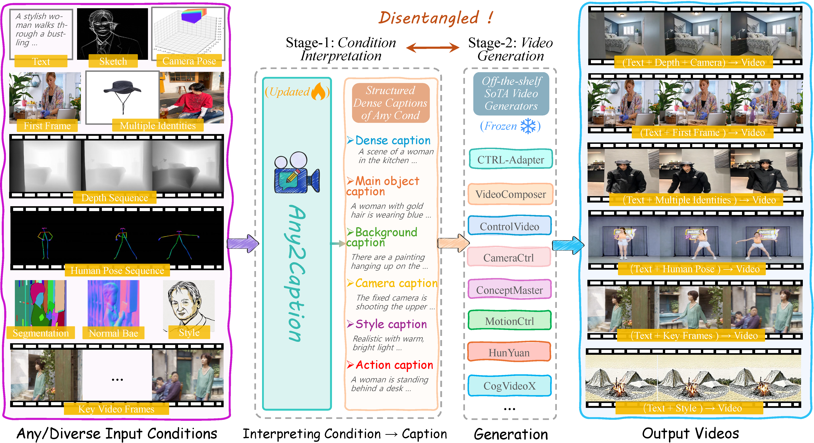
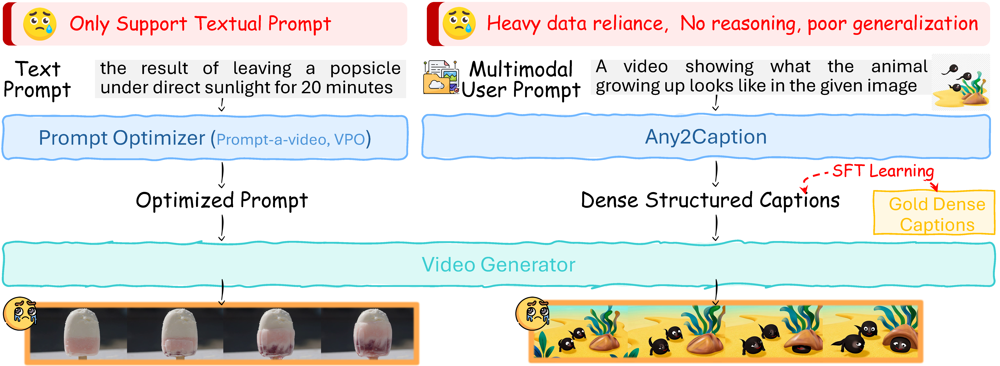
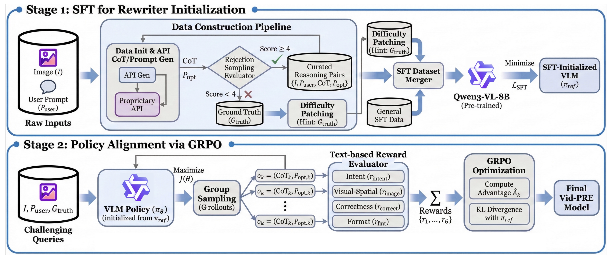
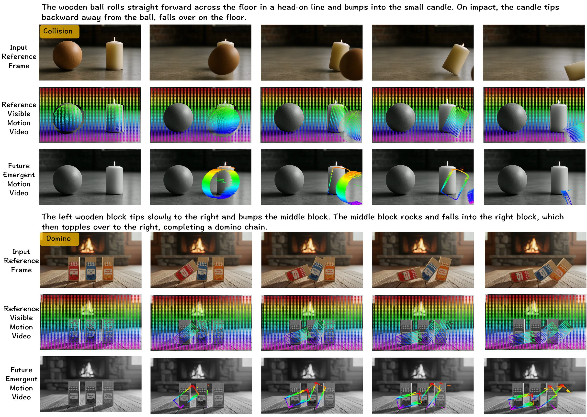

Track 01
High-Fidelity Visual Synthesis
Synthesize cinematic-quality videos with exceptional clarity, temporal stability, and ultra-high resolution.
Advanced Video Generation with High-quality, Faithfulness and Physical Intelligence
We are redefining the boundaries of video synthesis by bridging the gap between complex human intent and physical consistency. Our research focuses on interpreting multi-modal, highly sophisticated instructions to generate ultra-high-definition visual content. By embedding causal logic and world physics into the generative process, we ensure every frame is not just visually stunning, but inherently faithful to the laws of the real world.
Research Papers
Track 01
Synthesize cinematic-quality videos with exceptional clarity, temporal stability, and ultra-high resolution.
Track 02
Decode intricate human intent from multi-modal and sophisticated instructions into precise generative guidance.
Track 03
Embed structural world physics and causal logic to ensure every dynamic scene respects real-world laws.
We propose Any2Caption, a novel framework for controllable video generation from any condition by leveraging MLLMs to interpret diverse inputs into dense, structured captions.

We propose ReaDe, a universal, model-agnostic interpreter that converts raw instructions into precise, actionable specifications for downstream video generators.

From Evaluation to Enhancement: Benchmarking and Improving Think-with-Video Reasoning for Video Generative Models
VWG-Bench diagnoses whether video generators truly reason under rules and goals, and Vid-PRE improves this capability through a model-agnostic prompt rewriter trained with text-only rewards.

Seeing the Unseen predicts physical dynamics from a single image and guides video generation with both visible and initially unseen motion trajectories.

Survey
A Survey Toward Unified Video World Models